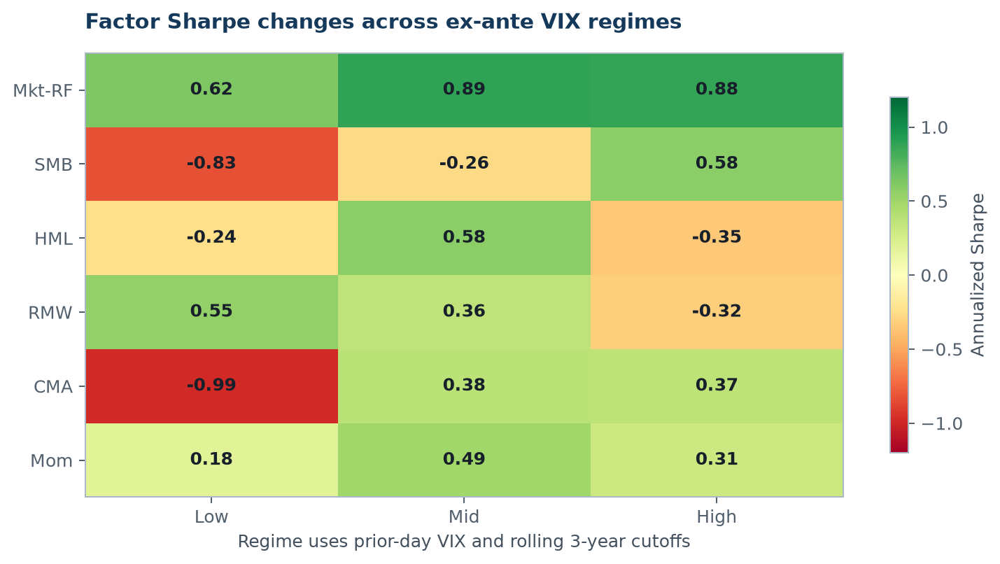
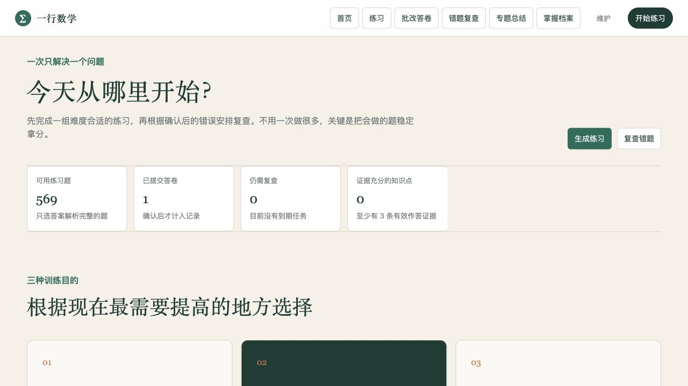
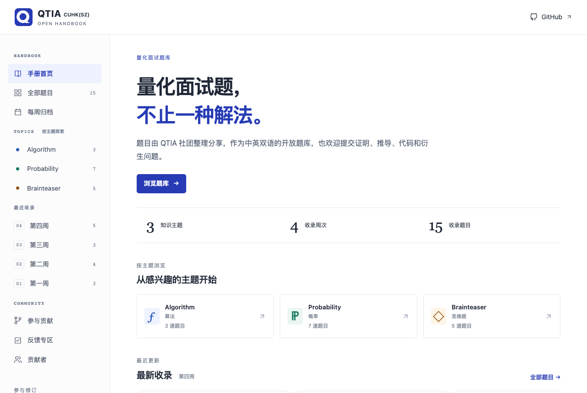

Selected Projects
把研究方法做成可运行的系统
从产业链研究框架到学习 SaaS，这些项目关注的不是功能数量，而是如何把模糊问题变成更可靠的判断与下一步行动。

Quant research
市场波动 × 因子稳健性
从波动状态假设出发，用无前视规则、区块 Bootstrap、成本和分样本检验，判断哪些因子差异可靠，以及风险预算换来了什么。

Investment tooling
Axe · 个人投资研究 Agent
把产业研究、多空证据与市场信号接入“选股—入场—仓位管理—复盘报告”的个人投资决策闭环。

Learning SaaS
高中数学 SaaS
连接题目来源、练习生成、纸质作答、人工确认、评分证据和后续复查的完整学习工作流。

Applied AI
NFT 头像图像识别
通过手工标签、验证样本和错误诊断，检查分类模型与数据定义之间的真实问题。

Live Demo · Community learning
QTIA · 量化社团面试题网站
按周浏览社团习题，按主题和难度找题；提供中英文题面，并通过 GitHub 讨论区交流答案与推导。
打开网站体验 ↗